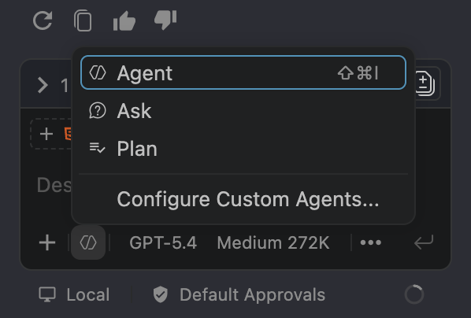

Guideline
Optimal guide, rules and governance for efficient coding-agent workflows
Use agents only when they clearly help with the thinking work. Keep everything else manual, scoped, and cheap.
The prompt engineering and context engineering materials in this repository point to the same conclusion: better context selection beats longer prompting.
Favor Skills plus Sonnet 4.6 (1x) or GPT 5.4 (1x) for most work. Escalate to expensive models such as GPT 5.5 (7.5x) or Opus 4.8 (15x) only when the planning or review risk justifies the spend.
The 70 percent problem still applies: the first draft is cheap, but the last mile requires engineering judgment.
Must-watch course: Watch this course. It takes about 1 hr 51 min, and you can speed up the lessons you already know.
Operating principles
This policy turns the repository guidance on prompt engineering, context engineering, and review-iterate workflows into a practical operating standard.
Manual first
If a task is obvious, local, and short, do it manually. Do not open an agent session for work that is faster to complete than to describe.
Context beats prompt
A basic prompt plus the correct 3 to 5 files is better than a long, clever prompt with oversized context. Spend tokens on relevant examples, not on decoration.
Keep sessions disposable
Open a fresh conversation for a new task. Long sessions degrade accuracy, forget constraints, and turn every future turn into a more expensive one.
Review before chaining
Never let one model output automatically become the next model input without a human checkpoint. Chaining without review is a common token leak and a common quality failure.
Manual vs agent decision gate
Use the smallest route that can solve the problem correctly. Escalate only when ambiguity, risk, or system size proves that escalation is necessary.
| Task profile | Default route | Model guidance |
|---|---|---|
| Small copy edits, obvious UI tweaks, one-line changes, straightforward renames | Manual only | No agent |
| Clear implementation slice with low ambiguity and local scope | Executor only | Use Haiku 4.5 for super simple tasks, or Sonnet 4.6 or GPT 5.4 for typical executor work |
| Multi-file task, unclear sequencing, or need for explicit handoff artifacts | Planner then executor | Use GPT 5.5 to write plan.md, then hand execution to a lower-cost model |
| Security-sensitive, architecture-heavy, or regression-prone work | Planner, executor, reviewer | Use a premium reviewer only if the cost of a defect is higher than the cost of the review |
Default workflow
The workflow is intentionally staged. Brainstorm first, plan second, execute third, review fourth, and manually verify at the end.
-
Brainstorm the shape of the solution
Use AI to compare viable options and surface trade-offs. Stop once the direction is clear.
- Ask for 2 or 3 approaches, not code.
- Ask clarifying questions only if the answer would materially change the implementation.
- Prefer the simplest acceptable option for the repository.
-
Create plan.md
Use a planner model only when the task is complex enough to justify a written plan artifact. In GitHub Copilot for VS Code, do this as a planning pass in chat before you ask Agent mode to change files.
- Document scope, assumptions, non-goals, ordered tasks, validation, and rollback notes.
- Break work into commit-sized slices.
- Keep the planning pass read-only until the target files and validation steps are explicit.
- Keep the plan small enough that each task can be validated independently.
-
Execute with a lower-cost model
Switch to Agent mode only after the current plan slice is concrete. Give the executor only the current slice and the files needed for that slice.
- Follow plan.md and progress.md.
- Create progress.md if it does not exist.
- Attach the exact files with #file, @file, #editor, or the + attachment button, then name the functions or components you expect the agent to touch.
- Do not widen scope without updating the plan.
-
Validate and checkpoint after every task
Each finished task needs its own state update and repo checkpoint.
- Update progress.md.
- Run formatting, linting, and building if the project provides them.
- Commit with the git CLI before moving to the next slice.
-
Review only at the right cost tier
Complex work gets a model or human reviewer. Simple work gets human review only.
- Review against plan.md, not memory.
- Focus on correctness, regressions, edge cases, and validation quality.
- Do not pay for premium review on trivial work.
-
Manually test and verify
Human verification is the actual completion gate.
- The agent saying done is not completion.
- Verify intended behavior manually.
- Close the task only after the result is confirmed.
Rules and governance
These rules reduce both token waste and quality drift. They should be followed mechanically, not selectively.
Always
- Decide if the task deserves an agent before opening a session.
- Start with brainstorming, then produce a detailed plan, then implement.
- Discuss solution options with a team member first when the problem is unclear, the same way human developers have always worked, instead of reaching for a model as the first place to think.
- Use explicit constraints and a short DO NOT list.
- Bring only relevant files, examples, and commands into context.
- Update progress.md after each completed task.
- Re-evaluate whether the plan is complete before moving on.
Never
- Use a premium planner or reviewer for trivial fixes.
- Paste the whole repository or long irrelevant history into the prompt.
- Continue a stale conversation for unrelated work.
- Let one model output automatically trigger another without a review checkpoint.
- Mark work complete before validation, commit, and manual verification.
Required artifacts
- plan.md: objective, scope, non-goals, ordered tasks, validation, risks.
- progress.md: completed tasks, pending tasks, last validation result, blockers, next step.
- One checkpoint commit per completed slice or logical task.
Spend premium budget on
- Architecture and sequencing decisions that are genuinely ambiguous.
- Cross-file reasoning with meaningful integration risk.
- High-risk refactors and subtle debugging.
- Second-pass review only when the cost of defects is high.
Cost tip: favor Skills plus Sonnet 4.6 (1x) and GPT 5.4 (1x) for routine execution and scoped reasoning. For real solution-finding, talk through the problem with a teammate first when needed, then use models to accelerate execution or review instead of outsourcing the initial engineering judgment to Opus 4.8 (15x) or GPT 5.5 (7.5x).
GitHub Copilot in VS Code
Use Copilot features deliberately. Do planning in chat first, then switch to Agent mode only when the work is concrete enough to execute and validate.

Use a planning pass when
- You need scope, sequencing, trade-offs, or a plan artifact such as plan.md.
- You are still deciding which files, functions, or components should change.
- You want risks, validation steps, or rollback notes before any edits happen.
Use Agent mode when
- The current slice is already chosen and small enough to validate on its own.
- You can point Copilot at the exact files and symbols that should be touched.
- You want Copilot to edit code and run a narrow validation step for that slice.
Attach files with # or @
- Type # or @ followed by a filename such as #index.html or @authService.py.
- Use the autocomplete dropdown to select the correct file from the workspace.
- Attach only the target file and one nearby related file when the change is local.
Use the built-in attach tools
- Click the + Add Attachment button beside the chat box to browse and attach files visually.
- Type #editor to force Copilot to read the file currently open in the active editor.
- After attaching files, name the target functions, components, or commands and keep the chat scoped to the current slice.
Quick context shortcuts: use #index.html or @index.html to attach a specific file, use #editor for the current tab, and use the + button when you want to browse attachments visually.
Prompt and context strategy
Use short structured prompts with narrow context packets. The goal is not the longest prompt. The goal is the smallest prompt that tells the model exactly what job it has.
Context packet checklist: task objective, the 3 to 5 relevant files attached with #file, @file, #editor, or the + button, the exact functions or components if known, explicit constraints, one or two examples to mimic, and the expected validation step.
Thinking Effort Guidelines: Configure thinking effort to Medium by default for routine execution. Elevate to High or Extra High for complex planning, architectural design, or critical reviews.
Brainstorm prompt
Use this only to shape the solution. Do not ask for implementation yet.
I want to solve [problem].
Relevant files (if known):
- [path/to/file]
- [path/to/neighbor]
Relevant functions or components (if known):
- [symbolName]
- [ComponentName]
Before writing code:
1. Give me 2-3 viable approaches with trade-offs.
2. Recommend the simplest acceptable option for this repo.
3. Ask clarifying questions only if the answer would materially change the implementation.
Keep it concise. Do not implement anything yet.Planner prompt for plan.md
Use this when the task is complex enough to justify a written plan artifact.
Create plan.md for [goal].
Relevant files:
- [path/to/file]
- [path/to/related-file]
Relevant functions or components:
- [symbolName]
- [ComponentName]
Output sections:
- Objective
- Assumptions
- Scope and non-goals
- Ordered implementation tasks
- Validation for each task
- Risks and rollback notes
Constraints:
- Prefer existing patterns
- Optimize for token efficiency
- Break work into commit-sized slices
- Do not expand scope beyond the stated goalExecutor prompt for implementation
This matches the operating workflow and keeps the executor on a narrow slice.
Please implement according to plan.md as follows.
Current slice:
- [task]
Target files:
- [path/to/file]
- [path/to/related-file]
Target functions or components:
- [symbolName]
- [ComponentName]
Expected validation:
- [command or manual check]
Execution rules:
- Follow plan.md and progress.md (create if not exist).
- After each completed task:
1. Update progress.md
2. Run linting, formatting and building
3. Commit the task using git CLI
4. Evaluate progress.md and continue until the plan is completed
Constraints:
- Read only files relevant to the current task
- Prefer existing patterns
- Stop and report blockers instead of guessing
- Do not widen scope without updating plan.mdReviewer prompt
Use this only for complex reviews. For simple work, review manually.
Review the completed work against plan.md and progress.md.
Focus on:
1. Correctness and regressions
2. Security and data handling risks
3. Edge cases and integration gaps
4. Validation commentary
Do not suggest style-only changes.
Rate issues by severity.Consequences and enforcement
The consequence should be immediate and operational. The point is to stop waste and drift as soon as they appear.
| Violation | Why it matters | Required consequence |
|---|---|---|
| Agent used for a trivial task | Spends tokens where extra reasoning help is not needed. | Stop the session, finish manually, and tighten the manual-first threshold using that example. |
| No plan.md for a complex task | Execution drifts, context grows, and cost compounds. | Freeze implementation until a scoped plan exists. |
| Executor receives oversized or irrelevant context | Higher token cost and lower accuracy. | Restart with a trimmed context packet and a fresh chat. |
| Premium model used for routine execution | Planner pricing is being spent on executor work. | Downgrade the execution model immediately and require justification for future premium use. |
| No update to progress.md after a task | There is no durable handoff state. | Do not start the next task until progress is recorded. |
| No validation or checkpoint commit | Errors spread and task history becomes hard to recover. | Block completion until validation runs and the checkpoint commit exists. |
| No review on complex work | High-risk defects escape the first pass. | Run reviewer pass or human deep review before acceptance. |
| No manual verification at the end | The tool is being trusted more than the engineer. | The change is not complete. |
Completion gate
Completion is a sequence, not a feeling. Every complex task should leave behind proof that the workflow was followed.
Required before closing
- progress.md reflects the real state of the plan.
- Validation commands have been run if the repo provides them.
- The current slice has a checkpoint commit.
- Review has happened at the appropriate cost tier.
- The result has been manually tested and verified.
Working rule
The agent can accelerate drafting, planning, and execution, but it does not change ownership. The engineer is still responsible for scope, correctness, and budget discipline.